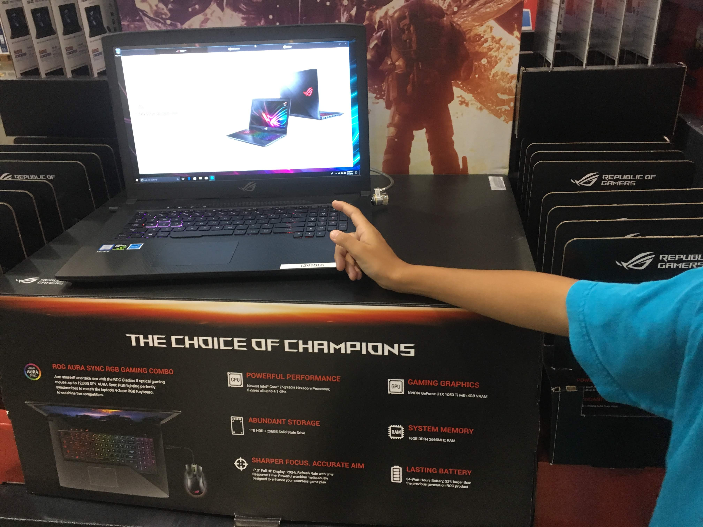

Top Pick
Lenovo IdeaPad Flex 5
~$479
AMD Ryzen 5 7530U
8GB RAM
256GB SSD
14" FHD Touch 2-in-1
Windows 11
Lightweight 2-in-1 with touchscreen — great for clinical notes and ATI testing. Flips into tablet mode for reading PDFs. 8-hour battery handles most clinical days. Runs all Windows nursing software without issues.
Check Price on Amazon →